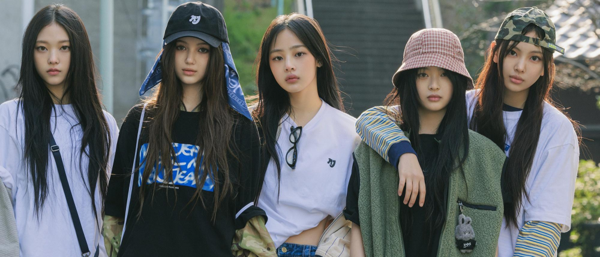
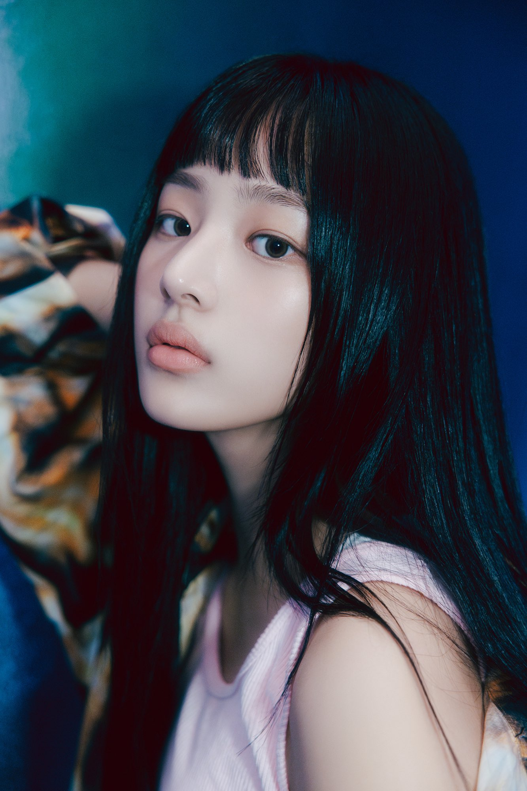
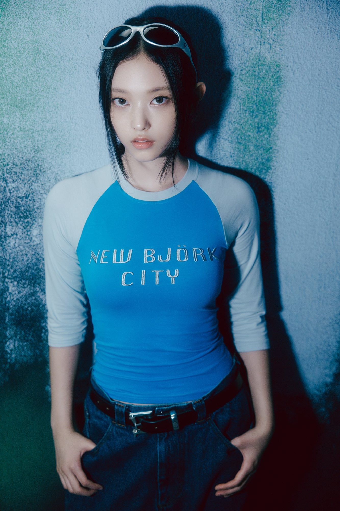
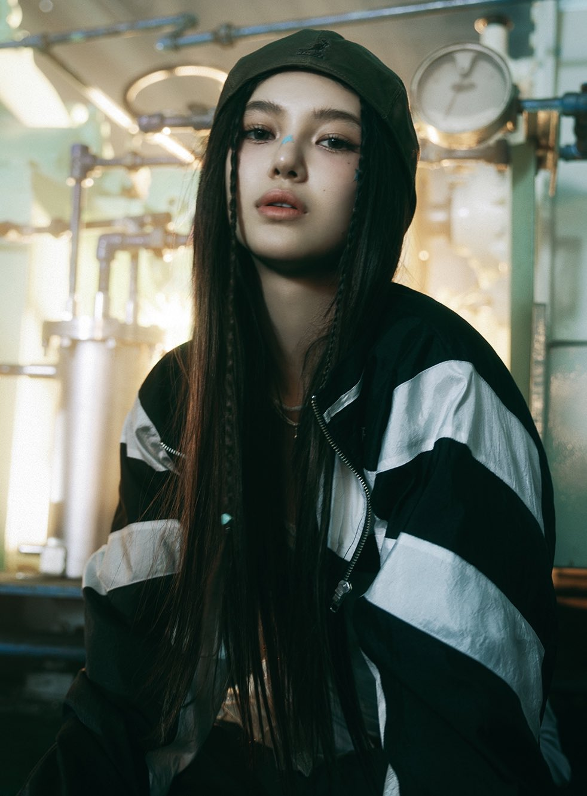

NewJeans Member Profile

NewJeans (뉴진스) adalah grup vokal wanita Korea Selatan yang dibentuk oleh ADOR dan HYBE Labels. Grup
ini terdiri dari lima anggota: Hanni, Minji, Hyein, Haerin, dan Danielle. Mereka dikenal karena gaya
musik yang mengingatkan pada tahun 1990-an dan 2000-an.
Hanni
Hanni lahir dengan nama Phạm Ngọc Hân pada tanggal 6 Oktober 2004, di Melbourne, Australia dari
orang tua Vietnam. Beberapa saat sebelum kelahirannya, keluarganya bermigrasi ke Australia, di mana
dia tinggal sampai pindah ke Korea Selatan.
Pada tahun 2019, Hanni menjadi bagian dari grup dance cover K-pop Australia bernama AEMINA. Pada
bulan Oktober 2019, ia lulus Audisi Global Big Hit dan menjadi trainee pada tahun 2020. Hanni muncul
dalam peran kecil bersama calon anggota NewJeans, Minji, dalam video musik untuk lagu BTS tahun 2021
"Permission to Dance".
Minji

Minji lahir dengan nama Kim Min-ji (김민지) pada tanggal 7 Mei 2004 di Chuncheon, Gangwon, Korea
Selatan. Selama masa sekolah dasar, dia belajar bahasa Inggris sebelum belajar di luar negeri di
Kanada selama beberapa bulan.
Pada tahun 2017, Minji menjadi trainee di bawah Source Music selama empat setengah tahun. Kemunculan
pertama Minji adalah dalam video berjudul "PLUS GLOBAL AUDITION #THE_GIRL 1" dan "PLUS GLOBAL
AUDITION #THE_GIRL 2. Kemudian, Minji dan Hanni sama-sama tampil di video musik BTS "Permission to
Dance" pada 8 Juli 2021.
Hyein
Hyein lahir dengan nama Lee Hye-in (이혜인) pada tanggal 21 April 2008 di Incheon, Korea Selatan. Hyein
menjadi
trainee pada tahun 2021, ADOR mengungkapkan bahwa dia pindah dari sekolah internasional sebelumnya
untuk melanjutkan homeschooling untuk menyelesaikan studinya. ADOR mengatakan bahwa hal itu
diputuskan oleh orang tuanya. Hyein juga tercatat sebagai “idola paling berpengalaman” dari kelima
anggota NewJeans, meskipun usianya masih muda ketika ia memulai debutnya sebagai idola di bawah
ADOR.
Di tahun 2016, Hyein mulai bekerja sebagai model cilik ketika dia baru berusia delapan tahun. Pada
bulan Juli 2017, Hyein diumumkan sebagai anggota generasi pertama grup anak-anak U.SSO Girl dengan
nama panggung U.jeong. Hyein keluar dari grup sekitar tahun 2018.
Hyein muncul secara reguler di saluran YouTube anak-anak PocketTV sejak didirikan pada 11 Januari
2019 hingga sekitar bulan Mei 2021. Dia juga merupakan anggota grup anak-anak gabungan saluran
tersebut, Play With Me Club (놀아줘클럽 / Nolajwo keulleob) sebagai penari dan vokalis. Pada tanggal 3
Mei 2021, Hyein resmi lulus dari grup dan saluran YouTube-nya.
Antara 19 Oktober dan 21 Desember 2021, Hyein muncul di acara anak-anak EBS Live Talk! Talk! Boni
Hani sebagai anggota SIXDANCE, grup tari campuran.
Haerin

Haerin lahir dengan nama Kang Hae-rin (강해린) pada tanggal 15 Mei 2006 di Seoul, Korea Selatan. Haerin
bersekolah hingga tahun kedua sekolah menengahnya pada tahun 2020, di mana ia keluar untuk menjadi
trainee. Haerin terungkap sebagai anggota girl grup mendatang ADOR , NewJeans, pada 21 Juli 2022.
Danielle

Danielle June Marsh, juga bernama Mo Ji-hye (모지혜), lahir pada 11 April 2005, di Newcastle,
New South Wales, Australia, dari ayah Australia dan ibu Korea Selatan. Danielle pindah bersama
keluarganya ke Korea Selatan sekitar tahun 2008 ketika dia berusia tiga tahun, dan mereka tinggal
hingga tahun 2012 ketika mereka pindah kembali ke Australia. Selama berada di Korea Selatan, ia
menjadi siswa di Sekolah Dasar Munsan.
Pada tahun 2011, Danielle membuat penampilan televisi pertamanya di Rainbow Kindergarten tvN . Dia
kemudian tampil di Shinhwa Broadcasting dan Jesse's Play Kitchen pada tahun 2012. Pada Oktober 2019,
Danielle kembali ke Korea Selatan setelah lulus Audisi Global BigHit dan menjadi trainee.